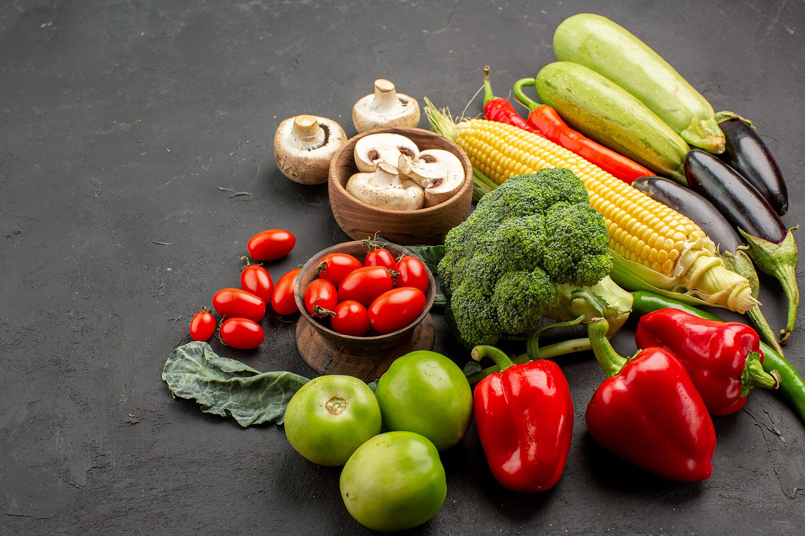
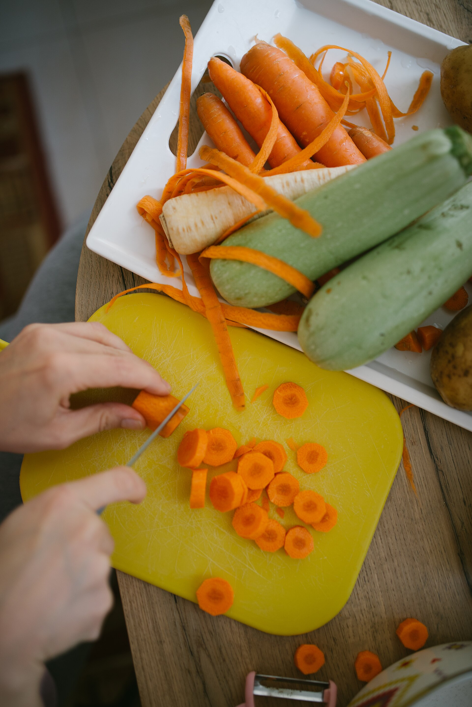

Home-cooked recipe
$700
- One balanced recipe
- Protein options
- Supplements by amount

A video consult with Michael Chae, DVM, MS, residency-trained at NC State: a balanced home-cooked recipe for $700, or a commercial diet plan for $500.
Each plan is written for one pet, its records and what it will eat.
Elimination trials and diet changes for itching, paw licking and repeat ear infections.
Chronic diarrhea, vomiting, IBD and food sensitivities, with fiber chosen for the case.
A daily calorie target, weigh-ins every 3 weeks and treats that fit inside it.
Diets that protect muscle and fit kidney, liver or joint care your vet is leading.


Two to three minutes for one pet. No payment at this step.
Your full nutrition history, while your vet sends labs from the last 6 months.
After review you get the total, then pay to book.
Recipes in grams, supplements by amount, storage and treats.
Both include the video consult, the written plan by email and one follow-up within 30 days.
Paid once your case is reviewed and the estimate is sent, before scheduling. Non-refundable once paid. After a year, a new consult is billed at the full fee.
$700
$500
Residency-trained clinical nutrition for your patient, who stays in your care.

Residency-trained veterinary nutritionist, NC State, 2021 to 2024.
Before his residency, Dr. Chae was a primary care veterinarian at Banfield Pet Hospital from 2018 to 2020, where he saw how often a case turned on what the pet ate.
He consults in English and Korean, and lives in Los Angeles with his wife and their cats Bong, Byul and Bee.

A short request for one pet, about 2 to 3 minutes. No payment is taken and no appointment is booked at this step.
Yes. Your veterinarian stays responsible for diagnosis and treatment; the plan supports that care.
After Dr. Chae reviews your request and records and sends the estimate. Payment comes before the appointment is scheduled.